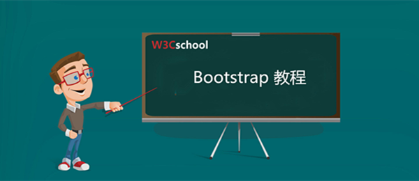

bootstrap教程
手册说明:
认识bootstrap：
在您学习完本教程后，您即可达到使用 Bootstrap 开发 Web 项目的中等水平。建议您进行Bootstrap实战练习来巩固您刚学到的新知识。
在您开始学习本教程之前需要先学习以下教程:
《HTML 教程》
《CSS 教程》

Bootstrap，来自 Twitter，是目前最受欢迎的前端框架。Bootstrap 是基于 HTML、CSS、JavaScript的，它在jQuery的基础上进行了更为个性化和人性化的完善，形成一套自己独有的网站风格，并兼容大部分jQuery插件。
Bootstrap简洁灵活，使得 Web 开发更加快捷。其最大的优势是响应式布局，使得开发者可以方便的让网页无论在台式机、平板设备、手机上都获得最佳的体验。
bootstrap教程结构概述：
本教程共由5个章节构成，详细讲述了bootstrap的基础使用方法并附带了大量可在线试运行的实例辅助您的学习，让您轻松掌握bootstrap。
本教程包含：
1、《bootstrap 简介》
2、《Bootstrap CSS》
3、《Bootstrap 布局组件》
4、《Bootstrap 插件》
5、《Bootstrap 相关内容》
bootstrap的发展：
2010年6月，为了提高内部的协调性和工作效率，Twitter公司的几个前端开发人员自发成立了一个兴趣小组，Bootstrap的构想产生了。他们希望通过这个工具包提供一种精致的、经典的、得到充分认可的，且使用HTML、CSS和JavaScript构建的组件，为用户建立和创建灵活的设计和丰富的插件库。
2011年8月，Twitter将其开源，至今Bootstrap已发展到包括几十个组件，并已成为最受欢迎的Web前端框架之一。Bootstrap是最稳定，响应最好的框架之一。它被各种水平的开发者所喜爱，即使是一个只具备 HTML和一些CSS基础知识的初学者也能够轻易地上手Bootstrap。
在2015年8月下旬，Bootstrap四周岁之际，Bootstrap团队发布了Bootstrap 4 alpha版。
Bootstrap4的的更新主要提升了以下几个方面：
- 从 Less 迁移到 Sass
- 改进网格系统
- 缺省弹性框支持
- Dropped wells, thumbnails, and panels for cards
- 合并所有 HTML resets 到一个新的模块中：Reboot
- 全新自定义选项
- 不再支持 IE8
- 重写所有的 JavaScript 插件
- 改进工具提示和 popovers 的自动定位
- 改进文档
- 其他大量改进
bootstrap的缺点：
虽然bootstrap自适应效果很好，但是缺点是不方便修改样式，对细节的不好把握，而且Bootstrap 是由 Twitter 的开发者开发来系统化他们网站应用的样式。当你的网站应用的样式和他们不一样，这意味着你不得不覆盖掉他们的样式来。大多数网站的样式并不像 Twitter 那样。因此，如果他们安装 Bootstrap ，他们会覆盖掉很多样式。
bootstrap的安装：
官网下载地址：http://getbootstrap.com/
中文网下载地址：http://www.bootcss.com/
如果您使用的是未编译的源代码，您需要编译 LESS 文件来生成可重用的 CSS 文件。对于编译 LESS 文件，Bootstrap 官方只支持 Recess，这是 Twitter 的基于 less.js 的 CSS 提示。
具体的安装方法您可以按照本手册中的《Bootstrap 环境安装》